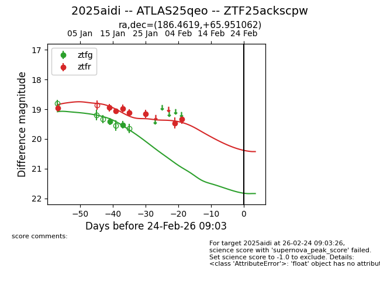
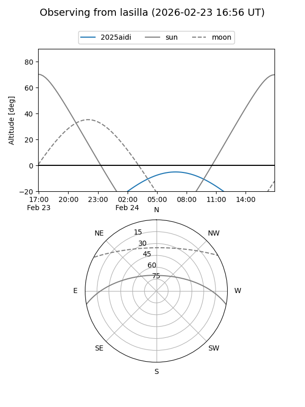
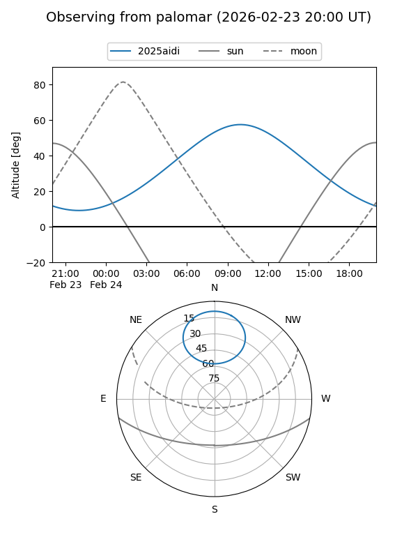
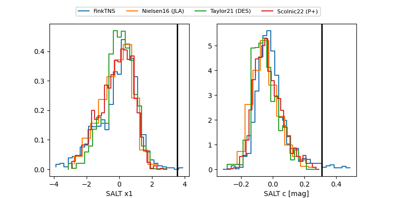

2025aidi
Target 2025aidi at 2026-01-26 11:16
Aliases and brokers:
FINK: link
Lasair: link
ALeRCE: link
TNS: link
YSE: link
alt names
ZTF25ackscpw (ztf,fink_ztf)
2025aidi (tns,yse)
ATLAS25qeo (atlas)
Coordinates:
equatorial (ra, dec) = 186.4619,+65.95106
equatorial (HMS+DMS) = 12:25:50.86,+65:57:03.82
galactic (l, b) = (127.0671,+50.97123)
Flags:
Photometry:
last ztfg=19.52, ztfr=19.16
2 ztfg, 6 ztfr detections
Lightcurve

Visibility


Additional plots
